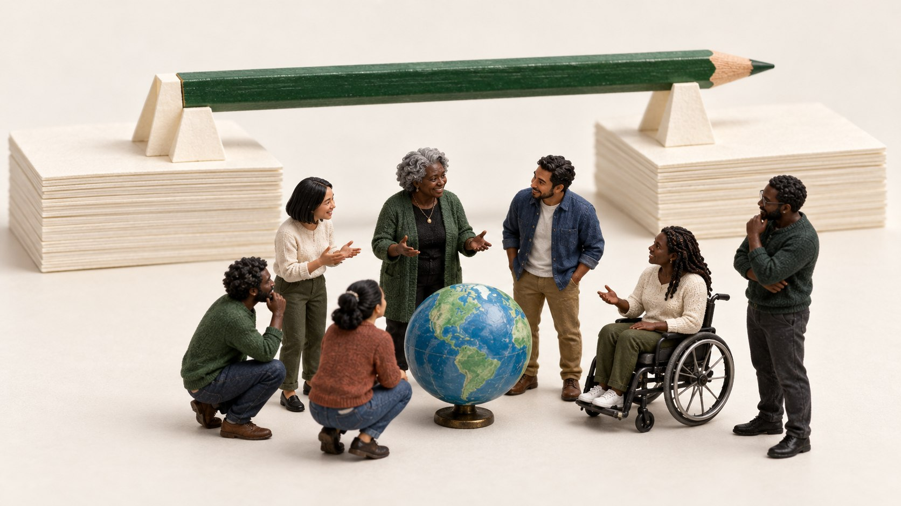

Watch
Competitions people can follow, the way fans follow a season.
Gimme the Loot
In developmentGimme the Loot turns security into a game people can watch, play and win: organized competitions where defenders prove their skill.

How it works
Competitions people can follow, the way fans follow a season.
Defenders take on organized security challenges and prove their skill.
Results count, champions emerge, and the league grows from there.
Under Global Rangers
Gimme the Loot lives under Global Rangers, carrying Green Rangers learning into open competition.
Explore Global Rangers →
Format, teams and schedule will be announced on this page.
Contact